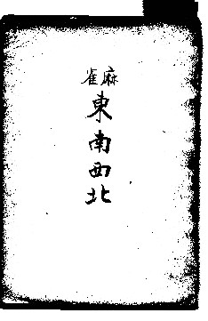

古書というのは、どうしても入手の困難がつきまとう。一般に、古くなればなるほど困難さは増す。それでも当時のベストセラーともなれば、発行部数が多いので入手も比較的容易である。
たとえば、「この本も読まずに能書きを垂れるな」と云われても仕方がない本の代表である林茂光の「麻雀競技法とその秘訣」、あるいは榛原茂樹の「麻雀精通」、さらには中村徳三郎の「麻雀疑問解答」、なにせベストセラーだったので、ちと熱心に探せば入手は可能である。
逆にそれほどの本でなくても、発行部数が少なかったり、地方出版、自費出版であったりすると、入手は困難を通り越して、ほとんど不可能lとなる。
たとえば沼崎雀歩の「牌姿難問」(s6)。古書愛好家なら喉（のど）から手が出るような本であるが、自費出版（発行部数が少ない）であるため、入手はほとんど不可能l。
入難度Super High 。
雀学書としてすばらしいのに地方出版であったこと、また著者が無名だったため発行部数が少なく、やはり入手がほとんど不可能なのが平野茂兵衛の「麻雀五段戦法」
内容はきわめて幼稚、おまけにたった35年、25年前の本なのに、自費出版であるのと著者が外へ出す気がないため、やはり入手がほとんど不可能なのが、浅見了「麻雀法学セミナー」 and 「麻雀アガリ役物語」（笑） とはいうもの、両方とも100冊くらいは娑婆にでているので、100％不可能ということはない。
前置きが長くなった。
今日紹介する高野明芳の「麻雀・東南西北」は、雀学度はMiddleクラス。おまけに見たとおりのあっさりした装丁で、雀界に与えた影響もほとんど無い。単純に云って影響度Low。

しかし著者の高野明芳は日本麻雀草創期の俊英。毎日新聞の記者であったが、支那仕込みの雀士。在京中は日雀連でゲームをしていた。名古屋転任後、やはり草創期の指導者であった司忠氏、片岡氏等と協力して、中部日本麻雀連盟の設立に尽力した人。
そんな俊英であるから、長生きしていれば、きっと多くの戦術書を著したと思われる。しかし惜しくも夭折したので、麻雀書はこの１冊しか著していない。そんな人物のただ１冊の著書となれば、麻雀文献史の１ページを飾る。
しかし毎日新聞の名古屋本社（名古屋毎日新聞麻雀部）という地方出版なので、発行部数も少なかった。そこで入手難度もSuperHighに近いHighクラスとなっている。
とはいうものの毎日新聞という大手新聞社から出版された以上、その辺りの古本屋の片隅に５百円くらいで積んであるかもしれない。見つけたら、「こんな薄っぺらな本で、５百円もとるのか」と文句を云いながら、黙って買っておくように。（笑）
＃さすがに５百円はないだろな。最近の古書店は、内容に関係なく戦前の麻雀書というだけで、へっちゃらで数千円つける。まぁ、この本なら安くて３千円、高ければ５千円、平均で４千円はつけるだろう。σ(-_-)が古書店の親父なら７千円つける。（笑）
|